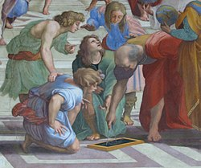

Математика (грец. наука, знання, вивчення) — наука, яка первісно виникла як один з напрямків пошуку істини (у грецькій філософії) у сфері просторових відношень (землеміряння — геометрії) і обчислень (арифметики), для практичних потреб людини рахувати, обчислювати, вимірювати, досліджувати форми та рух фізичних тіл. Пізніше розвинулась у доволі складну і багатогранну науку про абстрактні кількісні та якісні співвідношення, форми і структури. Загальноприйнятого визначення математики немає. Початково її використовували для підрахунку, вимірювання, а також для вивчення форм і руху фізичних об'єктів шляхом дедуктивних розмірковувань і абстракцій. Математики формулюють нові висновки та намагаються з'ясувати їхню правдивість, виходячи із вдало вибраних аксіом і визначень.
